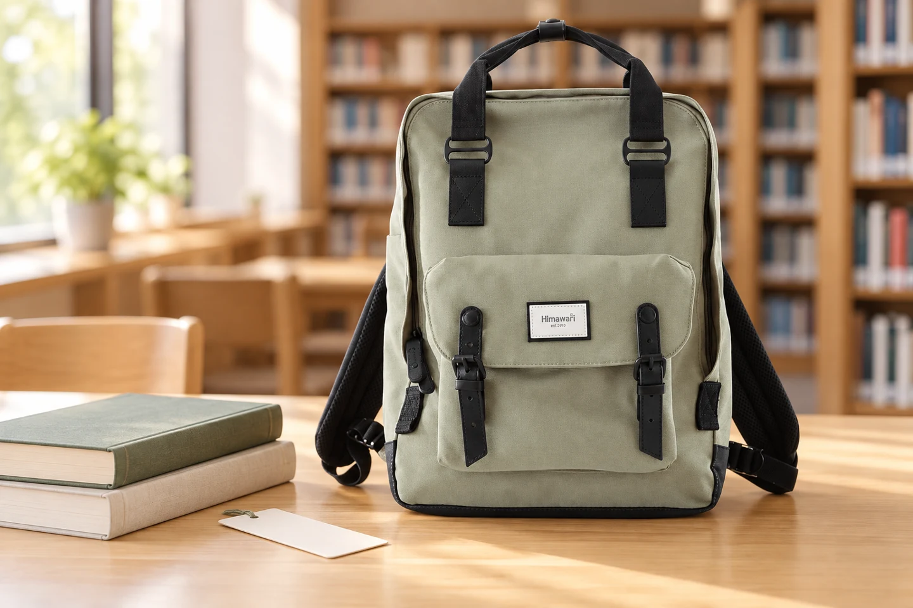

도서관 가는 가방, 반납할 책과 돌아올 책

도서관에 가는 날에는 읽은 책을 가방에 넣고, 돌아올 때는 다른 책을 가져올 수 있습니다. 출발할 때의 빈자리와 귀가할 때의 짐이 같지 않습니다. 반납할 책을 모으는 일, 함께 공부할 개인 자료를 준비하는 일, 새로 빌릴 책을 고르는 일을 나누면 창구 앞에서 가방 전체를 뒤질 부담이 줄어듭니다. 먼저 오늘 반납할 목록과 손에 있는 책부터 맞춰봅니다.
반납할 묶음은 집에서 정한다
이용 중인 도서관의 대출 목록과 책 표지를 나란히 봅니다. 제목이 비슷한 책이나 같은 시리즈의 다른 권이 있을 수 있으므로 실제 반납할 대상을 확인합니다. 가족의 책을 함께 가져간다면 누구의 대출인지도 구별합니다. 가방에 책이 있다는 이유로 모두 반납 대상이라고 생각하지 않고 오늘 필요한 목록을 정합니다. 목록을 개인 메모로 남긴다면 이용 안내와 실제 책을 대조할 정도로 쓰면 됩니다.
책 사이에 개인 메모나 영수증, 책갈피가 남아 있는지 펼쳐봅니다. 다른 자료의 작은 종이가 끼어 있으면 그 위치를 보고 자기 것인지 확인합니다. 함께 빌린 별책이나 부속 자료가 있다면 원래 안내와 맞춰 챙깁니다. 무엇이 포함되어 있었는지 모르면 임의로 다른 자료를 더하기보다 대출 기록이나 도서관 안내에서 확인할 항목으로 둡니다. 반납 묶음과 집에 남길 종이가 이 과정에서 나뉩니다.
개인 공부용 책도 가져간다면 반납 묶음과 경계를 둡니다. 별도 파일이나 커버를 사용하는 방법, 가방 안에서 위치를 나누는 방법 가운데 실제 구성에 맞춰 고릅니다. 대출 도서에 직접 접착 라벨을 붙여 자신의 분류를 만들지 않고 별도 목록으로 구별할 수 있습니다. 반납할 책은 먼저 꺼낼 수 있는 순서로 두고 표지 끝이나 부속 자료가 여밈에 끼지 않는지 봅니다.
회원증이나 접수에 필요한 정보는 이용하는 도서관의 안내에 맞춰 준비합니다. 대출과 반납의 방법이 같다고 가정하지 않고 실제 이용할 곳에서 어떤 흐름인지 확인합니다. 책을 꺼내는 동안 작은 소지품이 떨어지지 않도록 위치를 정합니다. 종이나 카드가 책 사이에 들어가 있지 않으면 반납할 때 책과 개인 물건이 함께 건네지는 상황을 줄일 수 있습니다.
Himawari No.1010과 도서관 외출을 준비할 때에는 반납 묶음을 꺼낸 뒤 생길 공간도 생각합니다. 개인 자료는 자기 자리로 유지하고 새 책을 가져올 계획이면 실제로 추가할 구성을 현장에서 판단합니다. 반납할 책을 빼면 같은 수의 책이 무조건 들어간다고 생각하기보다 새로 고른 책의 형태를 봅니다. 표지와 제본까지 포함한 묶음으로 정상적으로 담을 수 있는지가 필요합니다.

반납 뒤의 확인과 새 대출
반납은 해당 도서관의 안내에 따라 처리하고, 안내된 방식으로 현재 대출 상태를 확인합니다. 책을 투입했거나 창구에 건넨 순간과 기록이 갱신된 순간이 어떻게 확인되는지는 시설별로 따릅니다. 확실하지 않다면 바로 완료 표시를 하거나 다음 책 선택으로 넘어가기 전에 문의할 수 있습니다. 개인 목록에도 실제로 확인한 상태를 남기면 집에 돌아와 반납할 책이 남았는지 비교하기 쉽습니다.
새 책을 고를 때에는 가져갈 권수에 더해 실제 형태와 무게를 생각합니다. 크고 두꺼운 책이 눈에 들어왔으면 기존 개인 짐과 함께 이동할 방법을 먼저 봅니다. 책의 수가 같아도 가방 안의 모습은 달라질 수 있습니다. 안내된 대출 범위 안에서 오늘 가져갈 것을 고르고 준비가 어려운 묶음은 다른 일정이나 이동 방법을 선택할 수 있습니다. 가방을 닫기 위해 표지를 구부려 맞추는 방법은 피합니다.
도서관에서 공부할 계획이라면 반납 뒤 개인 책과 필요한 소품을 꺼냅니다. 새로 대출한 책은 원래 반납 묶음의 위치로 들어갈 수도 있지만, 아직 반납 처리가 남은 책이 있다면 섞이지 않게 둡니다. 장소를 옮길 때에는 회원증과 휴대전화, 필기구가 돌아왔는지 확인합니다. 열람 자리에서 생긴 개인 메모를 대출 도서에 다시 끼워 둔다면 다음 반납 전에 꺼낼 수 있도록 기록할 수 있습니다.
귀가할 가방을 정리할 때에는 새 책과 남은 개인 자료를 한 번 읽습니다. 지퍼가 자연스럽게 닫히는지, 책 모서리가 단단한 소품에 눌리는지 봅니다. 물기 있는 물건이 새로 생겼다면 종이 자료와 직접 닿지 않는 묶음으로 둡니다. 도서관에 도착한 가방을 그대로 기억하기보다 지금 들어 있는 책과 소지품을 기준으로 돌아갈 구성을 정하면 됩니다.
집에서는 새로 빌린 책의 목록과 실제 책을 맞추어봅니다. 반납 관련 질문이 남았다면 해당 기관의 안내에서 확인할 항목으로 정리합니다. 오늘 사용한 개인 자료는 자기 보관 위치로 옮깁니다. 반납할 책과 새 책이 섞여 남지 않도록 외출 전 메모의 상태도 갱신할 수 있습니다. 출발 목록과 돌아온 목록이 구별되면 다음 도서관 방문에서 무엇을 준비할지 읽을 수 있습니다.
다음 반납일에 필요한 정보는 이용 중인 대출 기록에서 확인하고 개인 계획과 연결합니다. 아직 읽지 않은 책을 구별하거나 가족과 함께 빌린 자료의 자리를 정할 수 있습니다. 이번 외출에서 꺼내기 어려웠던 묶음이 있었다면 다음 배치를 바꿀 단서로 남깁니다. 도서관을 오가는 준비는 책을 가방에 넣는 데서 끝나지 않고 반납 상태와 새 책의 자리가 각각 정해지는 데까지 이어집니다.